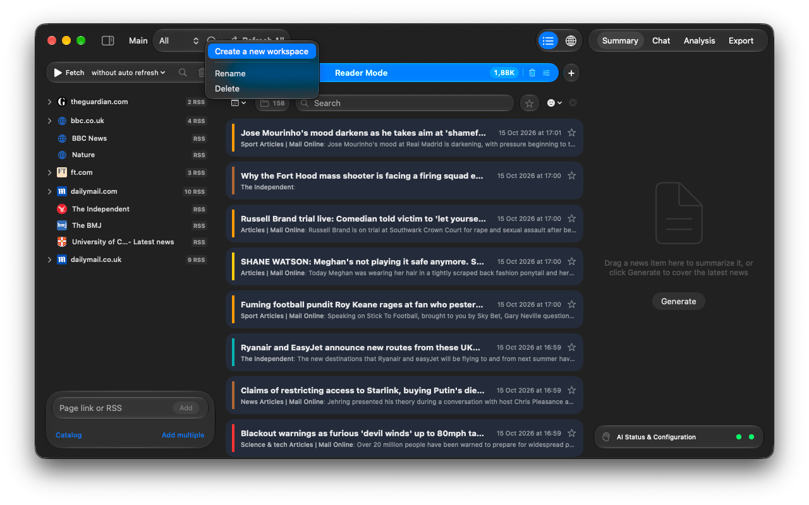

Handbook · Start here
Projects, workspaces and tabs
What a project file holds, how workspaces separate topics, and Reader Mode vs. AI Search tabs.
The project file
A project is one .infobubbl file. It holds all workspaces, sources, news, favorites, site icons
and downloaded podcast episodes. Changes are saved as you go.
- File → New (⌘N) creates a project; you choose where to save it first.
- File → Open… (⌘O) opens another one. The app relaunches with that project.
- The last project reopens on the next launch. Right-click the project name in the toolbar and choose Show in Finder to find the file.
- File → Optimize Database compacts a project that has grown large.
- Files from older versions (
.infobubbleor JSON) are converted: the app offers Save as New File….
Workspaces
A workspace is a separate set of sources with its own tabs, news, auto-refresh interval, summaries, chat and export. Use one per topic: say, World, Local and Tech.

- Switch with the Workspace picker in the toolbar.
- The … menu next to it has Create a new workspace, Rename and Delete.
- Refresh All fetches every workspace; while running it turns into Stop All.
Tabs: Reader Mode and AI Search
Tabs sit above the news list. Each workspace has two kinds:
| Reader Mode | Everything from your sources, newest first, analysed and grouped by story. Every workspace has exactly one. You can limit how old news may be when loaded (Don't load news older than) and when it is cleaned up (Delete news older than). |
|---|---|
| AI Search | A filter you describe in words, optionally with keywords. Only matching articles land in the tab. Create as many as you like with +. See AI Search criteria. |
The number on a tab counts its news. The trash icon (Clear results for this tab) deletes news older than a day, 3 days, a week or a month, or all of it. Favorites are always kept.
Questions or problems? Open an issue in the
GitHub repository.